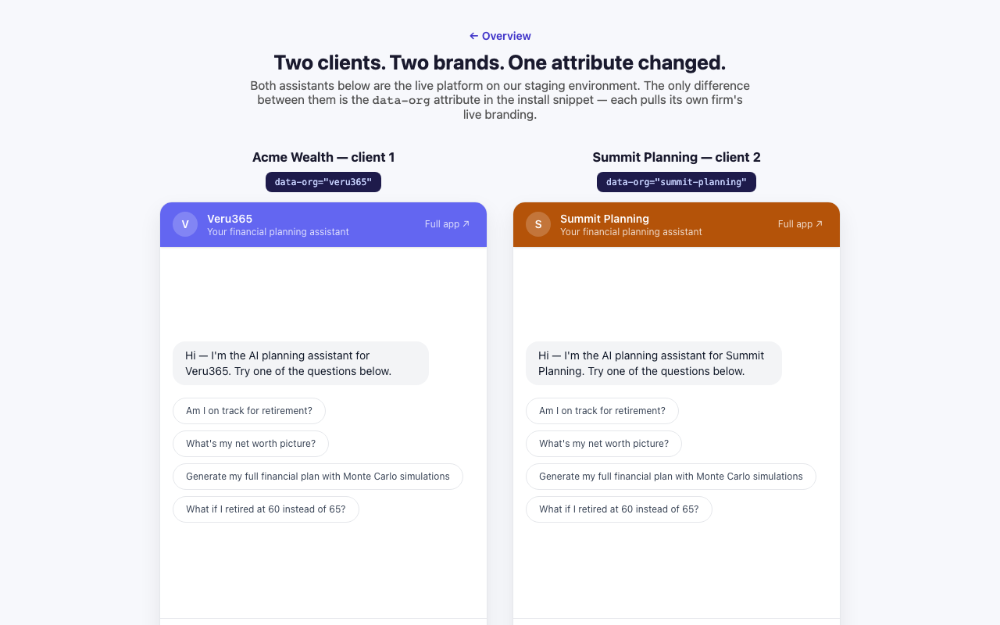

You sell the offering; your client's customers see your client's name. This page shows exactly which surfaces rebrand per client, how long it takes (about two minutes per client), and what a two-brand deployment looks like running side by side.
Each client you onboard gets an isolated organization on the platform, and that organization carries its own identity end to end: the logo, primary and accent colors, favicon, and the product name itself are all per-client settings. The signed-in portal, the login page, the public booking page, and the chat widget on the client's website all pull from the same branding record — set it once, and every surface updates. The "Powered by" footer line inside the widget currently shows the client's own product name (or Veru365 by default); removing attribution entirely is planned as a reseller-tier entitlement. Available today
You can verify this live right now: the same deployment is serving two different
brand records at once on this demo site. The Acme Wealth
pages run the widget under the platform's default demo brand, and the
Summit Planning page runs the identical widget wearing
a second firm's live branding record — different name, different colors, fetched per org from
the public branding endpoint. Open both side by side; the only difference between the two
embeds is the data-org value in the script tag.

This comparison is a live page you can open right now: compare-brands.html — both assistants stream real responses.
<!-- The demo hub and Acme pages (view source — this is verbatim) --> <script src="https://ihf-frontend-staging-mr64uhwn4a-uc.a.run.app/widget.js" data-org="veru365" data-base="https://ihf-frontend-staging-mr64uhwn4a-uc.a.run.app" defer></script> <!-- The Summit Planning page — same install, second brand --> <script src="https://ihf-frontend-staging-mr64uhwn4a-uc.a.run.app/widget.js" data-org="summit-planning" data-base="https://ihf-frontend-staging-mr64uhwn4a-uc.a.run.app" defer></script>
src above is a staging host. A production install provisioned
during a pilot is the same tag pointed at the production host
(https://app.veru365.com/widget.js).data-org
value drives the widget's branding — the conversation itself runs against shared
demonstration data, identical across orgs. Per-client chat context on the public widget (anonymous
visitors scoped to the client's org) is a roadmap item; signed-in client conversations already
happen per-org inside the branded portal. Details in "Honest boundaries" below.All of these read from one per-organization branding record. The fields are:
logo_url, favicon_url,
primary_color, secondary_color,
accent_color, app_name,
display_name, and custom_css.
| Surface | What the client's customer sees | Controlled by |
|---|---|---|
| Widget launcher bubble | The floating chat button on the client's website, tinted in the client's brand color. | primary_color — fetched per data-org slug from the public branding endpoint. |
| Widget chat header | Client logo (or initial-letter avatar), client name, brand-tinted accents inside the chat panel; "Powered by" line shows the client's product name. | logo_url, primary_color, app_name, org name. |
| Portal shell (signed-in app) | The full financial-planning portal — navigation, headers, theming — under the client's identity. Colors are exposed to the UI as CSS variables; custom_css allows finer overrides. |
All branding fields; preview endpoint returns them as ready-to-apply CSS variables. |
| Product name & favicon | The product name and favicon are per-client settings carried on the same branding record. | app_name + favicon_url. |
| Login page | Client-branded sign-in, resolved by the org's URL handle before the visitor has authenticated — branding reads are deliberately public so unauthenticated pages can theme themselves. | Public read: GET /api/orgs/url-handle/{handle}/branding. |
| Public advisor booking page | A bookable public page per client (/book/{slug}) with the client's name, logo, colors, and advisor details; feeds a rate-limited lead-capture endpoint. |
Branding record + the org's advisor-of-record settings (published by the org owner). |
| Invitations & invite links | Client staff and end-clients are invited by email or a shareable code link; the link lands them in the client-branded onboarding and portal experience. | Invitation API + org branding on the destination pages. |
| Uploaded assets (logo, favicon) | Served from a public asset proxy so they render correctly even on unauthenticated pages like login and the widget. | Upload endpoints below; storage is private, delivery is via the public branding proxy. |
The whole operation is a PATCH for colors and names plus file uploads for the logo and favicon — small enough to fold into your own client-onboarding flow, and during a pilot we run the first one alongside your team. These are real endpoints from our live API. Available today
One PATCH with only the fields you're changing. Validation is strict and returns structured
errors: primary and accent colors must be #RRGGBB hex, logo URLs
must be HTTPS, and custom CSS is length-capped and script-scrubbed.
curl -X PATCH "https://api.veru365.com/api/orgs/47/branding" \
-H "Authorization: Bearer $ORG_OWNER_TOKEN" \
-H "X-Org-Id: 47" \
-H "Content-Type: application/json" \
-d '{
"app_name": "Summit Planning",
"display_name": "Summit Planning",
"primary_color": "#B45309",
"accent_color": "#F59E0B"
}'
Multipart file uploads, image-validated, 5 MB cap. The response returns a public asset URL that works on unauthenticated pages — that's what the login page and widget use.
curl -X POST "https://api.veru365.com/api/orgs/47/branding/logo" \ -H "Authorization: Bearer $ORG_OWNER_TOKEN" -H "X-Org-Id: 47" \ -F "file=@summit-logo.png" curl -X POST "https://api.veru365.com/api/orgs/47/branding/favicon" \ -H "Authorization: Bearer $ORG_OWNER_TOKEN" -H "X-Org-Id: 47" \ -F "file=@summit-favicon.png"
Branding reads are public by design — this is the exact payload the login page and widget consume, so you can check a client's live branding with a plain GET, no token needed. This one is live right now: it returns the branding record behind the Summit Planning demo page (run it yourself, in a terminal or a browser).
curl "https://app1-backend-staging-mr64uhwn4a-uc.a.run.app/api/orgs/url-handle/summit-planning/branding"
// → { "org_name": "Summit Planning", "slug": "summit-planning", "logo_url": null,
// "primary_color": "#B45309", "secondary_color": "#78350F",
// "favicon_url": "", "app_name": "Summit Planning" }
branding.updated
webhook to any endpoints you've registered (HMAC-signed when you configure a signing secret on
the endpoint) — it reports which fields changed, never the values.Every organization has a feature-flag set: bank connections (Plaid), document vault, portfolio tools, tax, budgeting, scheduling, personal financial statements, CRM and calendar integrations (Wealthbox, Salesforce, RingCentral, Microsoft 365, Google Calendar, Calendly, HubSpot), and identity-verification requirements. Flip them per org, so a "Starter" client gets chat + planning while a "Premium" client gets the full stack — packaged and priced however you sell it. Available today
Platform-level operation (during a pilot, Veru365 provisions the platform credential and can run this with your team). Unknown flag names are rejected outright — no silent typos.
curl -X PATCH "https://api.veru365.com/api/platform-admin/orgs/47/features" \
-H "Authorization: Bearer $PLATFORM_TOKEN" \
-H "Content-Type: application/json" \
-d '{
"features": {
"enable_plaid": true,
"enable_file_vault": true,
"enable_portfolio": false,
"enable_scheduling": true
}
}'
Any member of the client org can read the effective flag set
(GET /api/orgs/47/features), so your client-facing UI can show
exactly what each client has turned on.
The widget is one script tag per page — main website, any number of separate landing pages, any number of domains. Each page embed is independent; there is no per-page setup and no limit on how many pages carry it.
Each client can publish a public advisor page at /book/{slug}
carrying their name, logo, and colors, with built-in rate-limited lead capture. Unpublished
pages are simply invisible — unknown and unpublished slugs are indistinguishable.
Email invitations (single or bulk, up to 100 per request) and a shareable evergreen invite code per org. Recipients land in the client-branded onboarding flow.
A per-org allowlist of which domains may embed each client's widget is planned for production deployments — today the embed is intentionally open for demonstration, and we say so plainly rather than imply a control that doesn't exist yet.
data-org rebrands the widget per client, but the public
(anonymous-visitor) conversation runs against shared demonstration data — the same answers
regardless of which client's site embeds it. The production widget platform introduces
anonymous/lead sessions scoped to the client's org. Signed-in conversations inside the
branded portal are already fully per-org today.